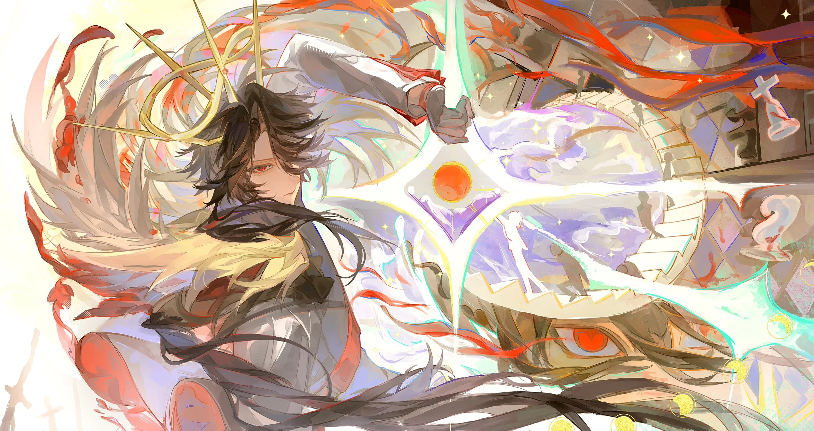
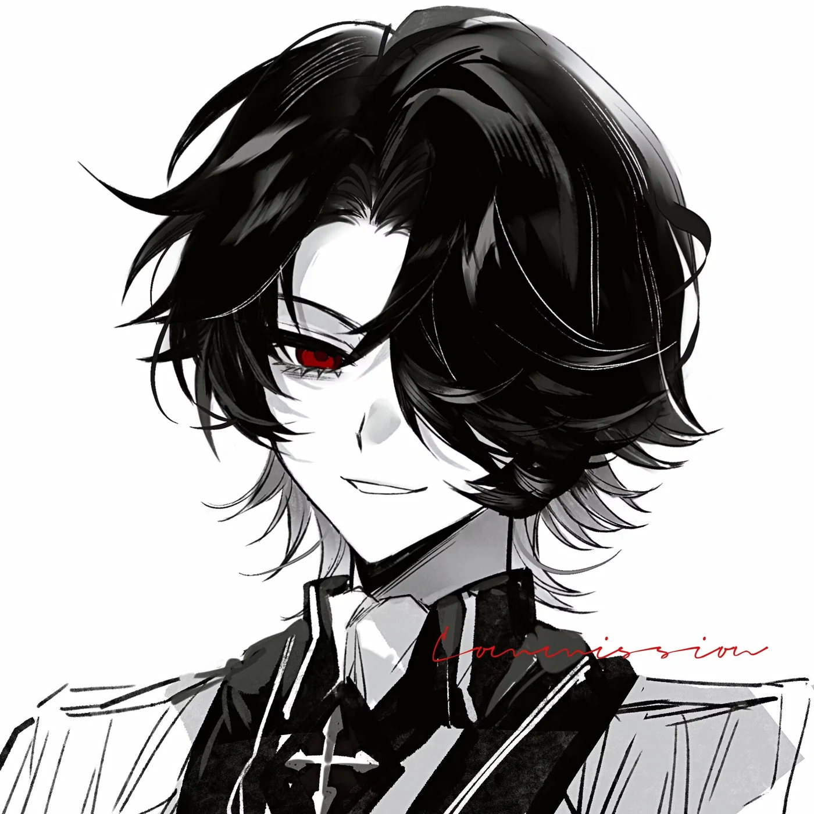
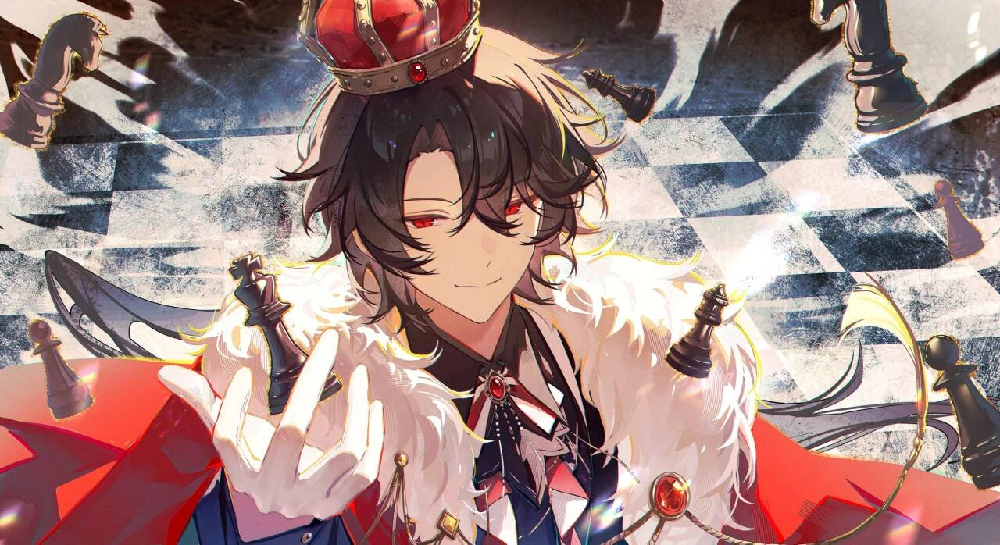
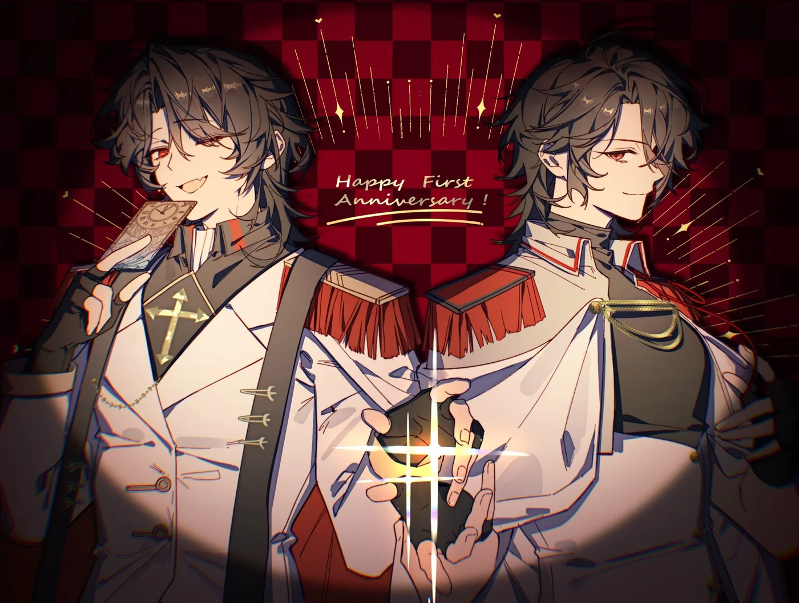

长子
生于卡莫瑞亚的克罗蒂家。家族在衰落，但仍是上三族的末裔。

Quick Paths
这里是四条进入档案的路径，不是完整履历。
Introduction
他出生于一个已经衰落的家族。父母很早离世，家中剩下他和弟弟，以及一位失踪的叔叔。他先学会的是让弟弟活下去。统治世界、登上神位，都是后来的事。
后来，他学会了另一件事：命运早把所有人的结局写好了。
他曾在天上与命运主对峙，在三十八亿年的幻境里看见自己的死。他没有跪下，也没有接受。他用主宰之力捏碎幻境，然后问那个存在：你在害怕我，是吗？
世界因此多了一个暴君。克罗蒂家多了一个能撑住它的人。北海的镜中留下一座未完工的神国。庭代尔自己得到的那条路，却没有答案。
王座从来不是他真正想要的东西。他把所有温柔留给身边的人，把最冷的一面留给世界。他最后死在一个面具之下，却在那里认出了此生最重要的脸。
Life
他的人生由两次断裂定义：北海之前，北海之后。
生于卡莫瑞亚的克罗蒂家。家族在衰落，但仍是上三族的末裔。
他鄙视校规，却包揽前几名。圣德赛尔学院里，他是那种让人又恨又没有办法的存在。
他拿到少年巫师决斗大赛冠军，并在次年从卡莫瑞亚魔法学校提前毕业。同一年，他成为主宰之神。
魔法联合部抓走提亚纳斯，想以此要挟他回卡莫瑞亚任职。庭代尔没有谈判，他杀了进去，把弟弟带出来。
他成为奥斯伯特的护国法师，与卡西乌斯相识、相恋。那两年，一切都在朝光的方向走。
他拿到了菩提，却在那片海面上失去了卡西乌斯。北海之夜从此劈开了他的人生。
以主宰与欺诈熔铸神位。他杀上天上神国，在三十八亿年的幻境里看见自己的死，然后拒绝了它。
他寻找被命运盯上的孩子，给六个不同种族的孩子一个家，也把他们变成了神座上的执政官。
他在北海建立诺伐圣廷，让骑士团进入神眷之战。战争像磨盘，把两边都碾碎。
审判女神在塔洛斯废墟中被一个孩子杀死。仇恨没有终止，它只是换了一个人继续生长。
他结束战争、解散骑士团，以北海海面为镜，把造了一半的圣廷封进镜中世界。他不再建造。
他化名行走世间，找到没有命运印记的拉苏斯，把她藏进漫长旅途，也把最后的希望交给她。
他创造出法德利，随后把父爱、恶念与主宰神格一起剥下，封进东南亚丛林。他做好最后布局，却已经不再是真神。
法德利与菩提交给赫法恩斯，拉苏斯由塞浦路斯守护。他走向那个命中注定的夜晚，在最后一秒认出了面具下的脸。
Storyline
每段故事都可以单独读，也可以叠在一处看。叠起来以后，才更接近庭代尔对命运发问的方式。

少年庭代尔相信力量可以代替选择。他足够强，所以不屑于掩饰自己的不屑。他有一个弟弟，有一个敢当面拆穿他的朋友，有一整套还没被命运碾过的傲慢。
这时的他，还不知道世界究竟会把一个人逼到哪一步。
北海夺走了卡西乌斯，也在他带走的菩提里埋下一条更长的伏线。庭代尔第一次发现，他以为可以兼顾的事，其实未必由他决定。
那场事故不是自然发生。天上有人在推，地上也有人在算。

他杀上天国，夺走六神格，把六个孩子送上半神之位。诺伐圣廷是王座，也是他为自己埋下的答案：如果命运不可改，那就再造一个可以改写命运的世界。
他以为力量足够大，就能让方向变得确定。
战争没有按他的剧本走。灵魂不够，盟友也在吃人。加利贝尔在塔洛斯废墟中被一个孩子杀死，他终于看见：他正在建造的不是神国，是一座坟场。
他杀死了战争的王，然后封印了神国，解散了骑士团。
最后五年，他不再寻找力量。他寻找没有命运印记的拉苏斯，创造法德利，斩去自己的主宰神格、恶念与父爱，然后把自己的死亡交给一场精确的布局。
他没打算让自己成为最后的答案。他做的事情，是让另一个答案有机会出现。
Character Arc
他没有从反派变成好人。他先把自己变成棋子，再把自己写进棋局里。
足够强的人，通常会把世界看得很简单。庭代尔一开始也是这样：他确信自己护得住弟弟，也确信自己能决定去往哪里。
People in the Story
只列名字，不展开。他们各自的尽头，是他棋局里擦过的光。
Archive
他留下的东西更像武器和谜题，答案还没有回来。

档案只写到这里。
后来的选择，才是结局。